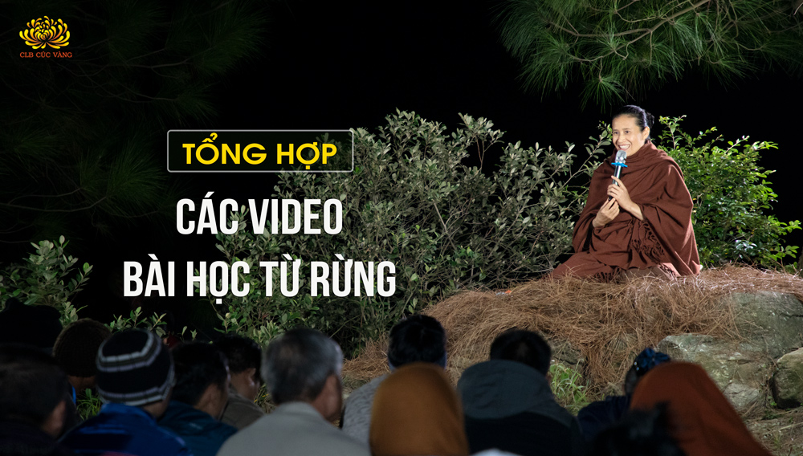
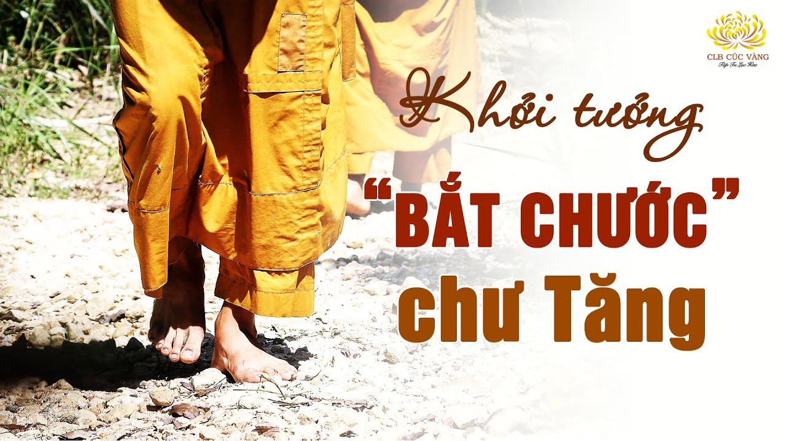

[Video] Tổng hợp các video bài học từ rừng
Bài viết gồm tổng hợp các video Cô Phạm Thị Yến chia sẻ với các Phật tử tại rừng
Chi tiết[Video] Bài 20: Phật tử hộ trì Tam Bảo cần có mười đức tính | Tu tập tại rừng lần 2
Mười đức tính cần có của người đệ tử Phật hộ trì Tam Bảo: Vui theo niềm vui của chư Tăng, Thân khẩu phải thanh tịnh, xa lìa trược hạnh, Lấy Pháp làm chủ, là mục đích...
Chi tiết[Video] Bài 19: Tu ba ngày cũng mang lại lợi ích cho thế gian | Tu tập tại rừng lần 2
Trong ba ngày tu tập trên núi, các Phật tử CLB Cúc Vàng đã được lắng nghe những chia sẻ sâu sắc từ Cô Phạm Thị Yến về lợi ích của việc tu tập và giá trị thiết thực mà sự tu hành mang lại cho bản thân cũng như cho thế gian.
Chi tiết[Video] Bài 18: Hành thiền: Đối trị với phiền não về nhiều vọng tưởng | Tu tập tại rừng lần 2
Cách để đối trị với phiền não về nhiều vọng tưởng khi thiền hành: Không nên phiền não khi trong tâm xuất hiện vọng tưởng thiện hoặc bất thiện. Nhận diện vọng tưởng, chính là tâm đang có sự tỉnh giác.
Chi tiết[Video] Bài 17: Thiền hành: Vọng tưởng, theo vọng về khúc cây và vỏ sữa | Tu tập tại rừng lần 2
Khi vọng tưởng khởi lên, nếu chạy theo để tư duy, ví dụ như câu hỏi: “Ai làm gãy cây ở đây?” - đó là do nghiệp lực khởi lên vọng.
Chi tiết[Video] Bài 16: Thực hành "trú niệm" trong bổn phận | Tu tập tại rừng lần 2
Khi thiền hành, nhìn thấy đạo hữu không thực hành đúng (đi ba bước dừng lại một bước), nếu nhắc nhở đạo hữu thì sợ bản thân sẽ mất chánh niệm. Vậy tư duy như thế có ích kỷ không?
Chi tiết[Video] Bài 14: Ba trong mười pháp không thể thiếu để đắc quả Tu đà hoàn | Tu tập tại rừng lần 2
Người xuất gia thực hành Pháp của người xuất gia hướng tới mục đích giả...
Chi tiết[Video] Bài 15: Ngồi thiền: Lợi ích của quán "đề mục" | Tu tập tại rừng lần 2
Giúp quay về triệt tiêu các tâm bất thiện để duy trì giáo Pháp của Phật, mong nguyện cho giáo Pháp của Phật được trường tồn, kéo dài để làm lợi ích chúng sinh.
Chi tiết[Video] Bài 13: Thiền hành: Diệt trừ "tâm chấp thiện" | Tu tập tại rừng lần 2
Khi thiền hành đi vào chỗ cỏ rậm, khởi ý: “đi vào chỗ này để cỏ xẹp xuống giúp mọi người đi vào đỡ sợ”. Vậy đó là vọng niệm hay tư duy?
Chi tiết[Video] Bài 12: Phật tử nên "cầm cờ tiên phong" trong giao tiếp | Tu tập tại rừng lần 2
Trong các mối quan hệ gia đình cũng như bạn bè, đồng nghiệp,... nhiều Phật tử vì không được sự đồng thuận của mọi người trong việc đi chùa nên việc ứng xử và giao tiếp
Chi tiết[Video] Bài 11: Ngồi thiền vọng tưởng "bứt cọng cỏ" | Tu tập tại rừng lần 2
Trong các mối quan hệ gia đình cũng như bạn bè, đồng nghiệp,... nhiều Phật tử vì không được sự đồng thuận của mọi người trong việc đi chùa
Chi tiếtTất cả những quy ước chung trong CLB Cúc Vàng đều được lấy ý kiến từ các thành viên trong đạo tràng, rồi cùng nhau thực hành. Như vậy, sẽ không có cái “tôi” xuất hiện.
Chi tiết[Video] Bài 9: Tu "đức tôn trọng" từ việc nhỏ trong đạo tràng | Tu tập tại rừng lần 2
Tôn trọng đại chúng, tôn trọng người trên mình là điều rất quan trọng. Nếu không để ý đến điều đó để tu tập thì nhiều kiếp sinh ra đều trở thành người thiếu khuyết.
Chi tiết![[Video] Bài 6: Buông bỏ 'gia duyên' hướng tới 'duyên tu' | Tu tập tại rừng lần 2](../media.phamthiyen.com/pty/posts/buong-bo-chap-thu-de-tu-giai-thoat-2.jpg)
[Video] Bài 6: Buông bỏ "gia duyên" hướng tới "duyên tu" | Tu tập tại rừng lần 2
Trong đời sống gia đình, khi con cái đã trưởng thành, cần học cách “buông tay” và trao quyền làm chủ cuộc đời lại cho chúng.
Chi tiếtTrước khi Đức Thế Tôn nhập diệt, Ngài đã dạy đệ tử Phật phải lấy chính Pháp làm ngọn đèn và nương tựa vào chính mình
Chi tiết
[Video] Bài 10: Thiền hành: Khởi tưởng "đi chân đất giống chư Tăng" | Tu tập tại rừng lần 2
Khi đi thiền hành khởi lên ý nghĩ: “Sao mình không đi chân đất để giống như chư Tăng?”. Chỉ một câu như vậy, nếu không có người nhắc nhở, chỉnh sửa thì lâu dần sẽ tạo thành nhân duyên dẫn đến như Đề Bà Đạt Đa
Chi tiết[Video] Bài 8: Trạng thái đầu của "tâm phóng dật" | Tu tập tại rừng lần 2
Khi thực hành thiền hành đoạn trừ tâm phóng dật cũng như ngồi thiền tư duy Pháp...
Chi tiết[Video] Bài 4: Thiền hành sinh niệm kính quý "duyên xuất gia" | Tu tập tại rừng lần 2
Thiền giúp có chỗ để hướng tâm tới. Từ đó mới có thể soi thấy được các niệm khởi vọng tưởng, giống như mặt nước đã yên lặng, lắng rồi thì mới có thể soi thấy hình bóng ở dưới đó.
Chi tiết[Video] Bài 3: Ngồi thiền đề mục trú tâm từ bi | Tu tập tại rừng lần 2
Để trú vào được tâm từ bi trong tâm quảng đại của tâm Bồ đề, phải thực hiện đầy đủ 3 bước: Quán sát thấy tâm bất thiện, đoạn trừ tâm bất thiện, hướng tâm tới nguyện cho giáo Pháp kéo dài.
Chi tiết[Video] Bài 2: Hành thiền trừ tâm phóng dật | Tu tập tại rừng lần 2
Thiền hành là đi từng bước chân để tập trú tâm, giúp thu gom tâm vào trong, tập không phóng dật.
Chi tiết[Video] Bài 1: Cách trú tâm từ bi kéo dài giáo Pháp Phật | Tu tập tại rừng lần 2
Mỗi mỗi Phật tử chúng ta khi tu tập tại chùa Ba Vàng, được thực hành Pháp dưới sự giáo dưỡng của Sư Phụ cùng chư Tăng, đều nhận được những lợi ích chân thật
Chi tiết[Video] Bài 6: Học để được làm Thầy | Tu tập tại rừng lần 1
Nhiều người luôn đặt ra câu hỏi, tại sao có người làm lãnh đạo, có kẻ làm nhân viên, có người trên cao, có kẻ dưới thấp? Phải chăng đó là do số phận đã sắp đặt sẵn?
Chi tiết[Video] Bài 5: Cắt duyên thị phi - Dẹp trừ phiền não | Tu tập tại rừng lần 1
Cuộc sống của con người đều bị chi phối bởi vui buồn, bị cảm xúc làm chủ gây nên những phiền não không đáng có. Vậy phải tư duy, quán sát như thế nào để có thể dẹp trừ được những phiền não đó?
Chi tiết[Video] Bài 4: Diệt hạt giống vô ơn bất thiện | Tu tập tại rừng lần 1
Trong cuộc sống, chúng ta là những người được nhận rất nhiều thứ từ người khác: cha mẹ cho ta thân...
Chi tiết[Video] Bài 3: Cảnh giác với sự phản trắc | Tu tập tại rừng Lần 1
Sự phản bội có xu hướng xuất phát từ phương hướng mà bạn không ngờ đến
Chi tiết[Video] Bài 2: Thiền hành - Vọng tưởng | Tu tập tại rừng lần 1
Tại sao trong khi đi thiền hành mình lại khởi lên những vọng tưởng? ...
Chi tiết[Video] Bài 1: Kính Pháp: Sống ở Rừng | Tu tập tại rừng lần 1
Đức Phật luôn dạy cho đệ tử của Ngài sống một cuộc đời thiểu dục tri túc, viễn ly dục ở thế gian. Tâm ham dục sẽ mang lại cho mình những đau khổ và phiền não.
Chi tiết